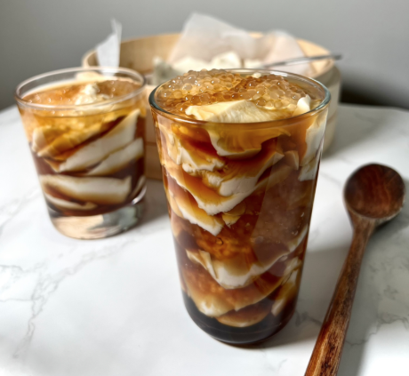
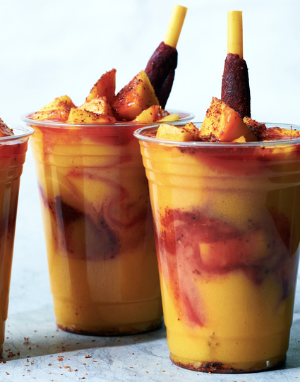

Taho is a snack that comes from the Philippines. It is made from silken tofu, brown sugar syrup, and sago pearls. It is a great snack because it is sweet but refreshing. I like to have this during the summer.

Mangonadas are frozen snacks from Mexico. They are made with mangoes, lime, chamoy, and Tajin. It is both sweet and savory. Even though it is a cold treat, I like to have this during the winter months. It is most popular in the summer.
